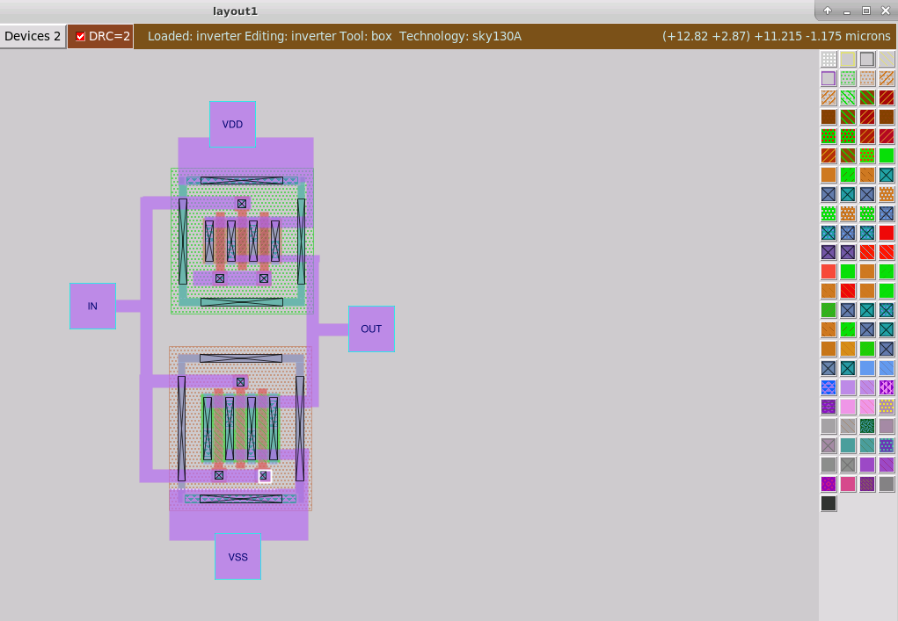

SKY130 Physical Design & Verification
Open-source PDK flow from device-level layout through DRC, extraction, RTL-to-GDSII, and hierarchical LVS debugging
SkyWater SKY130 · Magic · Xschem · Ngspice · Netgen · OpenLane · KLayout · OpenSTA
Role in the project
Structured workshop built around guided labs. The labs supply the designs and deliberately inject faults; the engineering work is diagnostic — reading what each verification tool reports, locating the responsible geometry, device, net or property, correcting it, and confirming the error clears.
Objective
Learn the open-source SKY130 flow end to end, and specifically to stop treating verification as a pass/fail gate. The useful engineering work begins when the result is FAIL — a DRC marker points back to a physical rule, and an LVS mismatch points back to connectivity, hierarchy, pins, devices or properties.
Learning path
Module 1 — SKY130 introduction and device-level flow
- CMOS inverter schematic in Xschem, reusable symbols, and testbench construction.
- SPICE simulation in Ngspice, then importing the schematic-generated SPICE into Magic.
- Creating and modifying SKY130 device layouts, extracting layout netlists, and running an initial LVS flow.
- Established the schematic → simulation → layout → extraction → LVS chain that every later module depends on.

Module 2 — GDS, extraction, DRC, LVS and XOR
Working inside the layout database rather than only drawing geometry: reading SKY130 GDS libraries into Magic, GDS/CIF input styles, vendor layout handling, port names, indices and metadata, LEF annotation, SPICE-based port ordering, abstract views, and read-only library cells.
- Parasitic extraction of both capacitance and resistance, producing RC-aware SPICE.
- Batch, interactive and hierarchical DRC.
- XOR layout comparison in Magic, isolating only the geometry that changed between two versions of a layout.
- Format awareness — GDS carries physical geometry, LEF carries abstract physical information and pin metadata, SPICE carries electrical connectivity and device information. Knowing which format preserves what became decisive when debugging hierarchical LVS later.
Module 3 — DRC rule debugging
Violations were introduced deliberately, so each one had to be understood rather than simply cleared: what rule was violated, why the foundry requires it, and what geometry has to change.
- Minimum width, minimum spacing, wide-metal spacing, and notch rules.
- Via sizing, multiple contact cuts, via enclosure and overlap, and automatically generated vias.
- Minimum-area and minimum-hole rules.
- N-well requirements, substrate taps, well contacts, and deep N-well structures.
- Full versus fast DRC styles, and interactive DRC debugging.
Debug cycle
Working a 0.14 µm spacing violation back to the specific rule and the specific edge is the same motion as working a Netgen property error back to a PCell parameter — the tool reports a symptom, not a cause.

Module 4 — RTL-to-GDSII with OpenLane
The complete digital implementation flow on open-source tools. It maps directly onto the commercial flow in my ALU project, but exposes more of the machinery because nothing is hidden behind a GUI.
- Synthesis and technology mapping — Yosys for RTL synthesis, ABC for mapping and logic optimization against the target standard-cell library.
- Pre-CTS timing in OpenSTA against an ideal clock, since no physical clock network exists yet.
- Floorplanning — core area, placement rows, routing tracks, I/O placement, well-tap and decap insertion, and power distribution network generation.
- Placement — global placement, optimization, then detailed placement and legalization.
- Clock tree synthesis with TritonCTS — buffer insertion and balancing against clock skew, latency and propagation, replacing the ideal clock with a real network.
- Global routing with FastRoute, also used to find congestion before exact routing.
- Antenna handling — diode insertion to limit plasma-induced gate-oxide charging during fabrication.
- Detailed routing with TritonRoute, converting the global solution into exact wires and vias under design rules.
- Post-route RC extraction in Magic, feeding realistic post-layout timing.
- Signoff across Magic (DRC and antenna), KLayout (additional DRC), Netgen (LVS) and CVC (circuit validity), then GDSII stream-out.
- config.tcl as the single control point for synthesis, floorplan, placement, CTS, routing, timing and verification parameters.

Module 5 — LVS and debugging
The core question of physical verification: the layout may be DRC-clean, but does it implement the circuit we intended to build? The labs progressed from trivial SPICE comparisons to hierarchical analog and digital designs.
- Connectivity experiments — changing individual connections deliberately and reading how each one surfaces in comp.out.
- Topology matching versus top-level pin matching as related but separate checks.
- Blackboxes — pin matching, missing pins, proxy pins, dummy nets, automatic flattening, and why the interface matters most when the internal implementation is unavailable.
- Terminal symmetry on resistors, capacitors and diodes, using Netgen's permute configuration to declare which pin permutations are electrically legal.
- A real analog block — a power-on-reset circuit compared between the Xschem schematic netlist and the Magic extracted netlist, exposing hierarchy, PDK devices, standard-cell definitions, parameterized cells, top-level ports, metal resistors and analog device properties.
- Layout versus Verilog for digital blocks — comparing Magic-extracted SPICE against gate-level structural Verilog, and why behavioural Verilog cannot serve that purpose.
- Realistic injected failures — missing and additional devices, fill and tap-cell mismatches, antenna diode insertion, broken power networks, missing vias, merged top-level ports, ground and substrate connectivity, and hierarchical macro issues.
Property checking — the lesson that stuck
Topology matching does not mean LVS has passed. Two netlists can agree on devices, nets, connectivity and pins and still fail because device properties differ. I debugged mismatches in MIM capacitor dimensions, resistor dimensions, MOSFET width and finger count. In one case an NFET PCell drawn as 2 µm per finger with two fingers extracted as an effective 4 µm width, while the schematic expected 2 µm — the Netgen property error traced back to the PCell parameters, not to anything wrong with the connectivity.

Divide and conquer
Rather than interpreting hundreds of errors at once: run LVS, fix the obvious structural problems, re-run, see which errors disappear together, then investigate the remaining nets and pins. Errors cluster, and clearing one structural fault often removes dozens of downstream symptoms.
What each check actually answers
| Check | Question it answers |
|---|---|
| DRC | Can this geometry be manufactured under the process rules? |
| Extraction | What electrical circuit does this geometry represent? |
| LVS | Does the extracted circuit match the intended schematic or netlist? |
| XOR | Are two physical layout versions geometrically identical? |
| STA | Does the implemented design satisfy timing requirements? |
| CVC | Is the final circuit electrically valid? |
What I took away
- Verification reports are debugging information, not pass/fail results. A DRC marker points back to a physical rule; an LVS mismatch points back to connectivity, hierarchy, pins, devices or properties.
- The tool reports the symptom, not the cause. Moving from a Netgen property error to a finger count in a Magic PCell is the actual skill being practised.
- File formats are not interchangeable. Which information survives GDS, LEF or SPICE decides what a hierarchical LVS run can even see.
- Open-source and commercial flows ask the same questions. Working through Magic, Netgen and OpenLane made the Cadence and Synopsys flows easier to reason about.